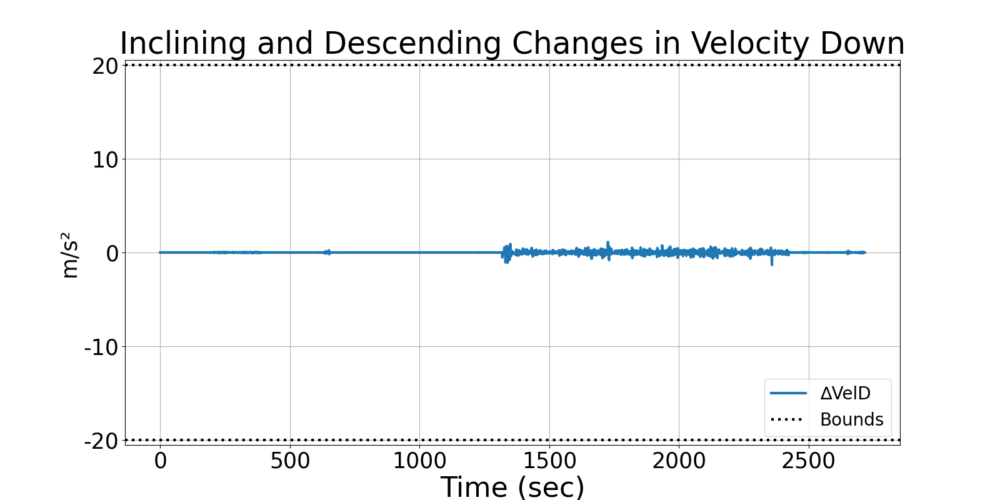
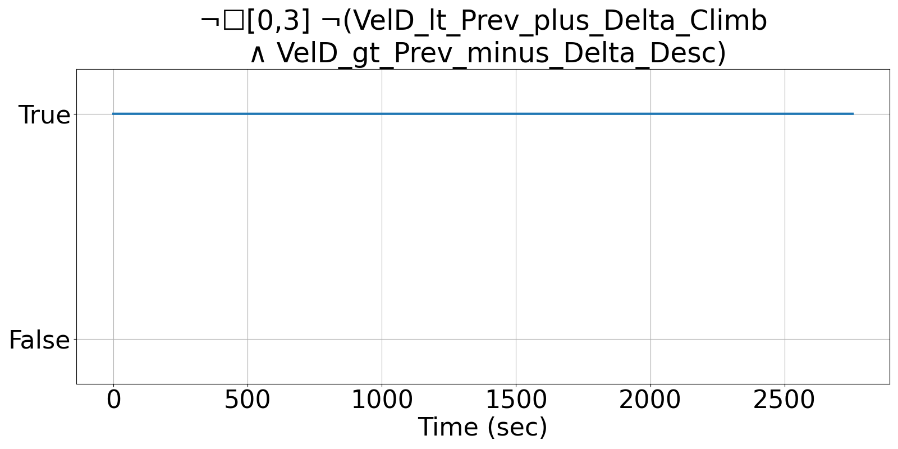
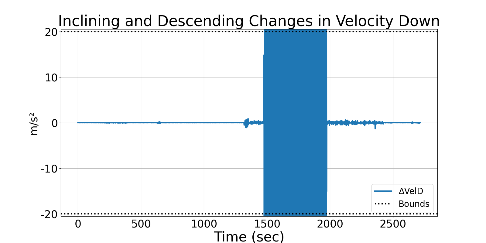
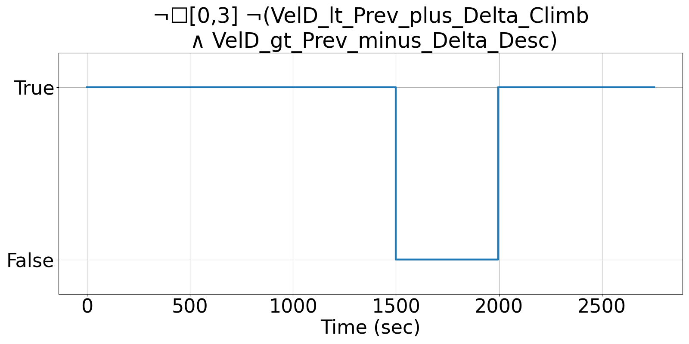

Integrating Runtime Verification into an
Automated UAS Traffic Management System
Matthew Cauwels, Abigail Hammer, Benjamin Hertz, Phillip H. Jones, Kristin Y. Rozier
This webpage contains supplementary specifications for "Integrating Runtime Verification into an
Automated UAS Traffic Management System" by M. Cauwels, A. Hammer, B. Hertz, P. H. Jones, and K. Y. Rozier
RC_UAS_6
Specification Description
The climb rate (VelD) of the UAS will be less than VELD_DELTA_CLIMB and greater than VELD_DELTA_DESC, but if it is not, allow 3 timesteps to recover
Signals Required
VelD
Boolean Conversion of Signals to Atomic Inputs
VelD_lt_Prev_plus_Delta_Climb: VelD < PREV_VELD + VELD_DELTA_CLIMB
VelD_gt_Prev_minus_Delta_Desc: VelD > PREV_VELD - VELD_DELTA_DESCMLTL Specification
¬☐[0,3] ¬(VelD_lt_Prev_plus_Delta_Climb ∧ VelD_gt_Prev_minus_Delta_Desc)
Fault Explanation
Vertical Velocity is changing too fast
Additional Notes
VELD_DELTA_CLIMB and VELD_DELTA_DESC should not lead to an excess of 2G's. Corresponds to acceleration sensor bounds spec
Figures



